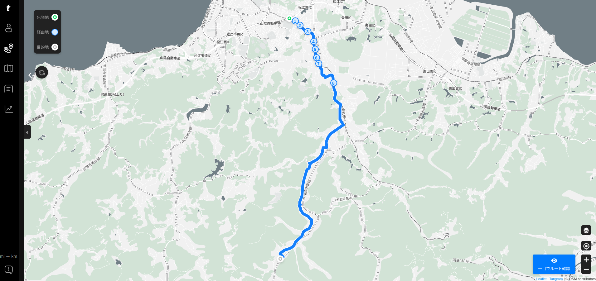

熊野大社へ詣でる（八雲立つ風土記の丘 遺跡めぐり 4）

今回のお散歩カメラは，意宇六社1 のうちまだ自転車で行っていない熊野大社に詣でることにした。
といっても熊野大社は松江の地元民にとってはお馴染みで，子どもの頃は親父殿の車に乗せてもらって初詣に行っていた。 そもそも熊野大社のほうが（出雲大社より）格上だしね。
雨上がりの朝
朝方まで降ってた雨が上がって，透明度が抜群なのです。
午前中の用事を済ませ，とりあえず松江城に登ってみる。
これなら楽しくサイクリングできるだろう。 というわけで，さっそく熊野大社に向かおう。
熊野大社へ Go

{kind=link}
trimm Center
ゴメン。 上のルートは松江城ではなく松江工業高校が起点になっている。 何故かというと，うちのサイクルコンピュータは街中のナビが下手くそで，全く役に立たないから。 まぁ，郊外でも裏道を走りたがるのは変わらないんだけど。
ちうわけで裏道に入ります。
裏道といっても実際には意宇川の西側の集落の中を通る道で子どもの通学路にもなってるみたい。 でも，軽自動車がギリギリ通れるかどうかの道幅の区間があったり
みたいな看板もあって「ホンマにええんか？」とビビりながら進んでみたり。
おおっ。 道はあってるようだ。
というわけで，到着。
折角なのでお参りしていこう。
交通安全の御守も買ってみた。
安全に楽しくサイクリングができますように。
八雲温泉
そこに温泉があるのに入らない道理はないよね。 大人一人530円。
…いいお湯でした。 秋の晴天の下で露天風呂サイコー！
風呂上がりはもちろん木次牛乳。
一緒に写っている POW BAR は持参っス。 YouTube で紹介してるのを見て買ってみた。 しっとり食感で美味いっス。 何より口の中の水分をもっていかれないのが素晴らしい！ あと，腹持ちもいいので，これ一本で無問題。
今日の宍道湖（夕景）
温泉を堪能したので帰りますかね。 その前に夕方の宍道湖に行こう。
んー。 夕日は無理ぽいな。 まぁ，日没まで待ってみよう。
対岸の方に見えるのって，ひょっとして蜃気楼か？ 日が傾いて急激に気温が下がったからかな？ 面白いもんが見れたな。
というわけで
今日も楽しくサイクリングできた。 サイクルコンピュータによるとトータルの走行距離は33kmとあるが，今回はちょいちょい計測を失敗ってるからなぁ。 実際にはもうちょっと走ってるかもしれない。
まぁ，でも，今の私の筋力・体力なら丁度いいコースだな。 熊野大社まで楽々行けるようになれば，もっと遠乗りできるようになるかもしれない。
コースも楽しかったし，トレーニングも兼ねて熊野大社には頻繁に詣でてみるかな。
参考

- trimm ROLLIN サイクルコンピュータ GPS 自転車 速度計 ワイヤレス ナビゲーション ANT+センサー対応 Bluetooth 心拍数 高度計 2.7インチ スピードセンサー(device only)
- Trimm
- B0BLNFPWTQ (ASIN), 8809748020286 (EAN)
- 評価
韓国企業だけどモノは made in Chaina って書いてあった。ナビ機能付きで2万円以下というのは安い。スマホアプリと連携させて操作する。モノクロ液晶だがバッテリ消費は少なめ。各種センサーやスマートウォッチと連携可能。

- GARMIN(ガーミン) vívosmart 5 Black S/M バンド型スマートウォッチ 心拍計【日本正規品】
- ガーミン(GARMIN) (Release 2022-04-21)
- エレクトロニクス
- B09XGYX7JF (ASIN), 0753759301590 (EAN), 753759301590 (UPC)
- 評価
サイクルコンピュータと Bluetooth または ANT+ で連携可能なスマートバンド（活動量計）として購入。 Garmin 製なのに自前では GPS 機能がない（スマホの GPS 機能と組み合わせて使う）。活動量計としての機能は十分というかありすぎる（笑）

- ミニサイズ Shokz OpenRun Mini 骨伝導イヤホン 公式ストア正規品 ワイヤレス 急速充電 驚きの通話品質 IP67防塵防水 bluetooth5.1 2 30日間返品無料 コズミックブラック
- Shenzhen Shokz Co., Ltd.
- エレクトロニクス
- B09TVLHJ1X (ASIN), 4512223694288 (EAN)
- 評価
以前のものはマルチファンクションキーが利かなくなったので Black Friday の安売りのタイミングで買い替え。私のように頭の小さい人向け（笑） 値段並みの音質はある，と思う。耳が自由って素晴らしい。

- Canon コンパクトデジタルカメラ PowerShot ZOOM 写真と動画が撮れる望遠鏡 PSZOOM
- キヤノン (Release 2020-12-10)
- エレクトロニクス
- B08L4WKDZ7 (ASIN), 4549292179675 (EAN)
- 評価
望遠鏡型コンパクトデジカメ。メモリと充電器（要 Power Delivery）は別に用意する必要がある。使い勝手はまぁまぁ。

- マルニ(Maruni) クイックショット K-600 仏式バルブ用応急瞬間パンク修理剤 ブラック
- マルニ(Maruni)
- スポーツ用品
- B00AAPY0ZQ (ASIN), 4907388003301 (EAN)
- 評価
転ばぬ先の杖として購入。緊急用のパンク修理剤。フレンチバルブ対応。コンパクトサイズでサドルバッグやステムバッグにも入る。1mm以下の小さな穴なら対応可能らしい。使用方法は本体に書いてある。1本でチューブ1本分のガスも供給できるので，そのまま低速で5,6km程度なら走行可能だった。チューブレスにも対応と書いてあるが，それはちょっと... 50km以上の中長距離ライドには不向きと思われる。

- [FAIRWEATHER(フェアウェザー)] stem bag x-pac/coyote
- FAIRWEATHER(フェアウェザー)
- B08K34WLXD (ASIN)
- 評価
スポーツサイクルのステム部分に取り付けられる小物入れ。防水仕様。底に小さなハトメ穴が空いていて，万一水が入った場合でも排出できるようになっている。

- [クローム] メッセンジャーバッグ SIMPLE MESSENGER/シンプル メッセンジャー BLACK (現行モデル) 12L 防水 メンズ
- CHROME(クローム)
- ウェア&シューズ
- B08P54PQDB (ASIN), 0841916163973 (EAN), 841916163973 (UPC)
- 評価
プライベートお出かけ用。たまたま安売りの時に購入できた。チャリンコ乗ってても背中がゆさゆさしない。大きすぎず丁度いいサイズ。鞄の蓋がマジックテープでちょっと煩いのが玉に瑕だが，概ね満足。

- アークレイ株式会社 グルコレスキュー (ブドウ糖補給ゼリー) 25g×5包 2箱セット
- アークレイ株式会社
- B06XDPTLDD (ASIN), 4573189972315 (EAN), 4987486118541 (EAN)
- 評価
低血糖になった場合の緊急措置用に購入。仕事用鞄とプライベート用鞄に忍ばせている。ちょっとお世話になった。ゼリー状で摂りやすい。転ばぬ先の杖。

- VAAM(ヴァーム) 明治 ヴァーム(VAAM) アスリート 顆粒 栄養ドリンク風味 4.7g×10袋
- 明治 (Release 2021-03-16)
- ヘルスケア&ケア用品
- B08VMWL13F (ASIN), 4902705035614 (EAN)
- 評価
運動時に脂肪をエネルギーに変えやすくする働きがあるらしい。お試しで買ってみた。とりあえず1時間以上自転車に乗る場合に服用している。水に溶かさず飲むと書いてあるが，水と一緒に飲まないと大変なことになるので注意（経験済み）

- POW BAR パウバー イチジク＆ヘーゼルナッツ 1箱(12個入) 【トレイルランニング トレラン ランニング 補給食 登山 マラソン ランニング 自転車 行動食 エナジーバー 砂糖不使用】
- THE POW BAR
- B0DKHD735N (ASIN)
- 評価
しっとり食感で旨し。口の中の水分をもっていかれないのは素晴らしい。腹持ちもいいので1本で当分保つ。